PROJ_05 · 최종 수정 2025년 5월 22일 오후 6:50
ChatGPT로 만든 프로그램
readme에는 「AI나 ChatGPT로 프로그램 만들어보는 것들」이라고 적혀 있습니다. 폴더 이름은 뤼튼이나 OpenAI로 해본 실험입니다. 아래 화면은 2026년 10월 17일에 프로그램을 실행해 찍었습니다. JavaFX 두더지와 pptx 변환은 실행에 필요한 파일이 없어 이 화면에는 넣지 않았습니다.
추가 학습 자료
질문과 답변 문서는 이 폴더 안에 있습니다. 본문은 옮기지 않고, 파일 이름과 앞부분에 적힌 주제만 모았습니다. 프로그램을 만들 때 ChatGPT와 뤼튼을 사용했습니다.
-
질문 문서
파이썬 개념, 웹·하이브리드 앱, 자주 쓰는 프레임워크를 물어 받은 답이 docx 세 개입니다. txt에는 WebGL, 학습 사이트, 영어 라디오, 수학 AI, 그래픽 질문, 공부와 취업 계획 답이 있습니다.
-
그림
학습 주제 카드 그림과, DALL·E가 그린 GoF 디자인 패턴 그림이 있습니다. 패턴 그림의 글자는 여러 칸이 깨져 있습니다.
- docx 파이썬 궁금한거 질문 답변, 웹과 하이브리드앱 질문과 답변, 자주 사용되는 프레임워크와 라이브러리 목록
- txt ChtGPT답변 모음 여섯 개, 나무위키 트리로 문제를 만들게 한 기록, 영한 사전 API 답변
- 그림 days_topics_temp.png, DALL·E가 그려준 GOF 디자인 패턴 그림.webp
폴더에 있던 그림
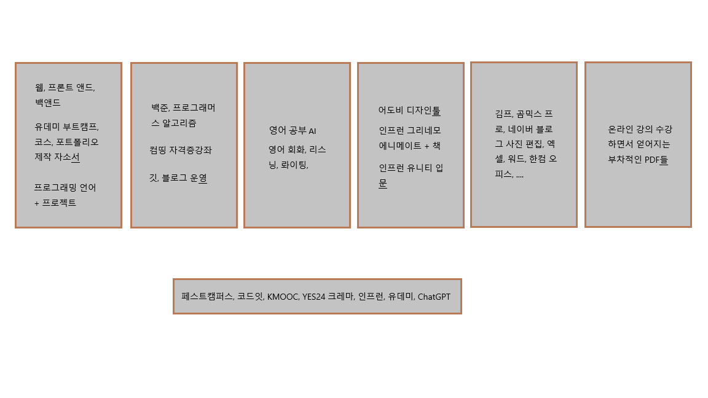
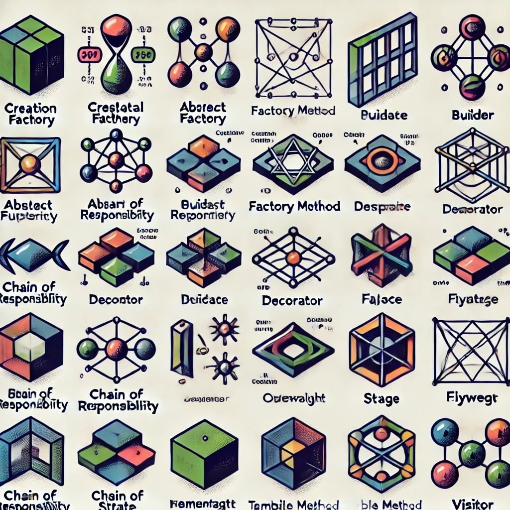
실행 화면
2026년 10월 17일에 실행한 화면입니다. 벽돌 행 수는 캔버스 안에 들어가도록 12행으로 맞췄고, 로또는 시작 후 번호 6개가 나온 뒤입니다. 백업 창은 비밀번호를 묻기만 하며, 암호는 적지 않았습니다.
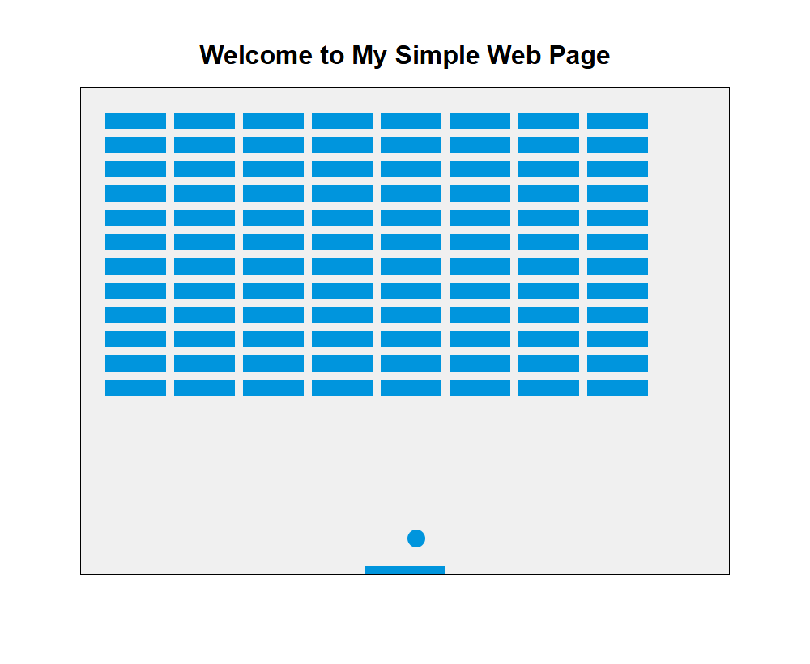
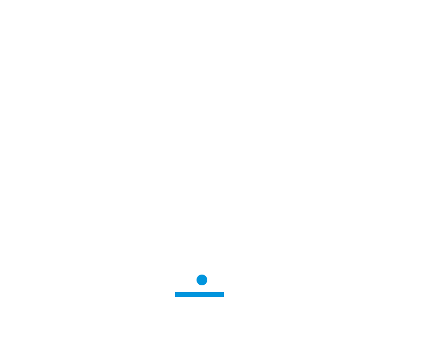
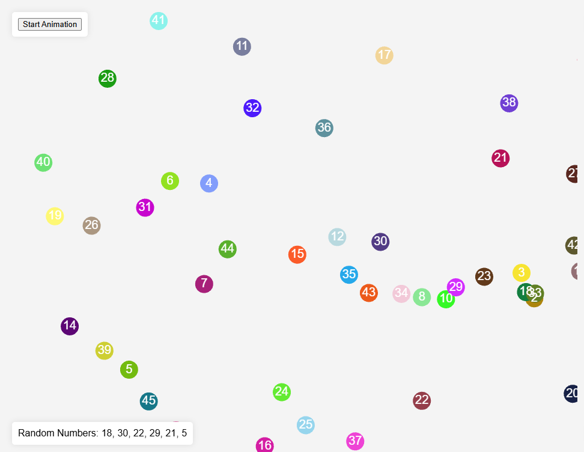
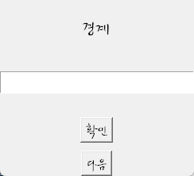
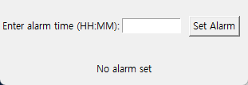
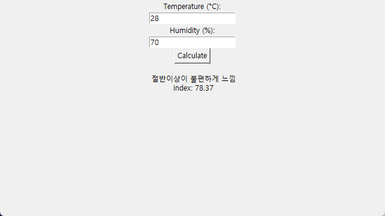
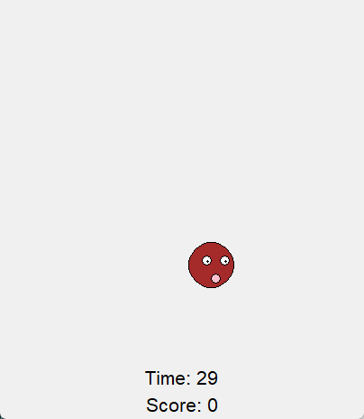
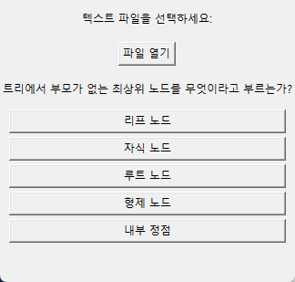
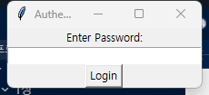
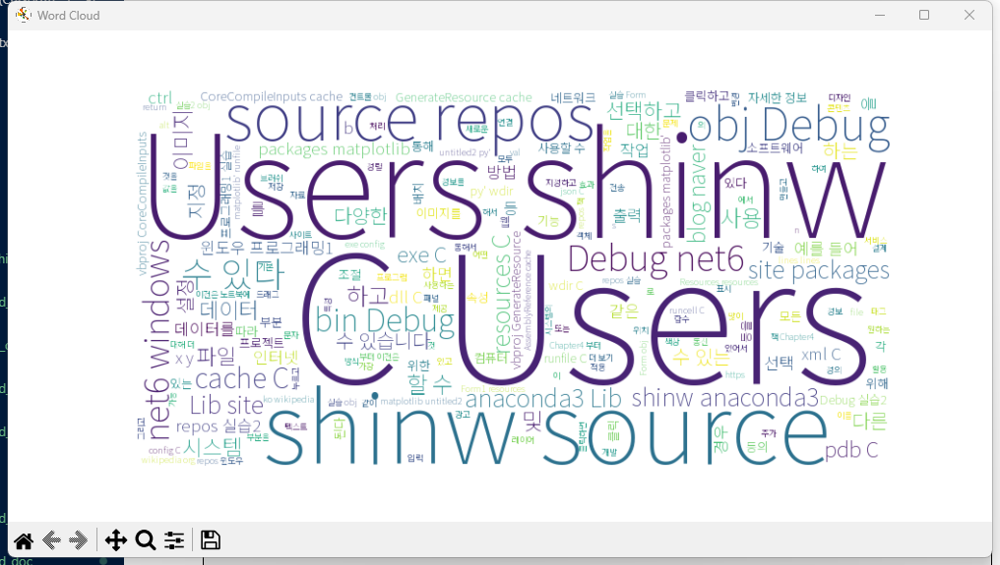
간단 설명
Flask app.py는 templates/index.html만 보여 줍니다. 그 페이지는 공, 패들, 벽돌을 그리고 좌우 화살표로 패들을 움직입니다. 벽돌은 8열 12행이라 패들 위에 자리가 남습니다. 게임 오버 알림은 주석입니다. 별도 파일 벽돌깨기_chatGPT.html은 같은 공과 패들만 있고 벽돌 배열이 없습니다.
로또는 공 45개를 WebGL로 그리고, 번호는 2D 캔버스에 올립니다. 시작 후 5초 동안 느려지다가 서로 다른 번호 6개를 아래에 적습니다. Tkinter로는 단어 다섯 문제, 알람, 불쾌지수, 두더지, 5지선다, 폴더 백업을 만들었고, JavaFX 두더지는 3×3 칸에 고슴도치 그림을 1초마다 옮깁니다.
사용 도구
-
HTML
벽돌 페이지, 공·패들 페이지, 로또 페이지가 각각 HTML 파일입니다.
-
Canvas · WebGL
벽돌과 공은 2D 캔버스입니다. 로또 공은 WebGL이고, 숫자는 그 위 2D 캔버스에 씁니다.
-
Python · Tkinter
단어 연습, 알람, 불쾌지수, 두더지, 문제 생성, 백업, 워드클라우드, 파일 합치기 스크립트가 있습니다.
-
Flask · JavaFX
Flask는 벽돌 템플릿을 열고, JavaFX 두더지는 고슴도치 이미지를 버튼에 올립니다.
-
ChatGPT · 뤼튼
프로그램을 만들고 질문 답을 정리할 때 ChatGPT와 뤼튼을 사용했습니다. 워드클라우드 스크립트는 Copilot 파일도 하나 있습니다.
실행 환경
핵심 기능
| 기능 | 하는 일 |
|---|---|
| 벽돌 캔버스 | 공과 패들, 벽돌 충돌을 그립니다. 행 수를 12로 맞춰 벽돌이 캔버스 안에 남습니다. |
| 로또 | 번호 1부터 45까지 공을 움직인 뒤, 겹치지 않는 6개를 결과로 적습니다. |
| 단어 · 문제 | 탭으로 나뉜 단어 파일에서 다섯 문제를 내고, 5지선다 창은 트리 문제 두 개를 코드에 적어 둡니다. |
| 파일 도구 | 상위 폴더의 txt를 한 파일로 합치고, 비밀번호를 통과하면 폴더를 백업합니다. 암호 값은 여기에 적지 않습니다. |
파일에서 이은 기록
- readme AI나 ChatGPT로 프로그램 만들어보는 것들. 최종 수정은 2025년 5월 22일 오후 6시 50분입니다.
- 고친 곳 벽돌 행 수, 로또 WebGL 변수, 불쾌지수의 가장 낮은 구간 비교, 워드클라우드와 파일 합치기의 예전 드라이브 경로를 이 폴더 기준으로 바꿨습니다. 합치기는 하위 폴더까지 읽고, utf-8이 아니면 cp949와 utf-16을 시도합니다.
- 글꼴 워드클라우드 README에 적힌 Noto 글꼴 파일은 폴더에 없습니다. 이번 실행은 맑은 고딕으로 그렸습니다. Copilot 스크립트는 konlpy가 없어 실행하지 않았습니다.
- 실행 안 됨 JavaFX 두더지는 고슴도치 그림이 없고 JDK에 JavaFX가 없습니다. pptx 변환이 여는 메디슨.pptx와 질문 답변 txt는 폴더에 없습니다.
- 불쾌지수 제목은 「불퀘지수 계산」입니다. 섭씨 28도, 습도 70의 결과는 78.37이었습니다.